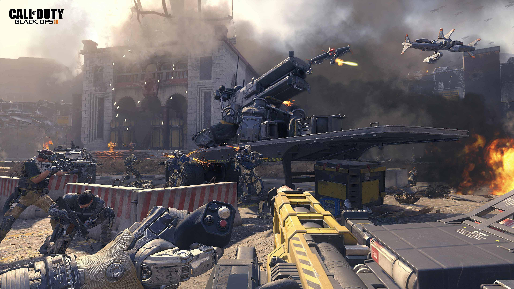
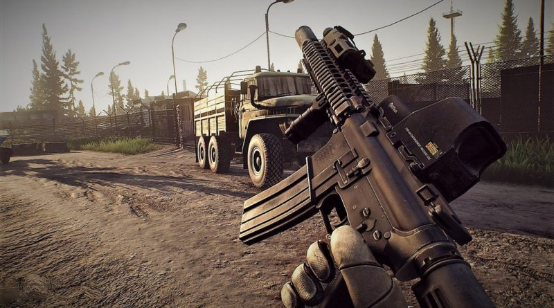
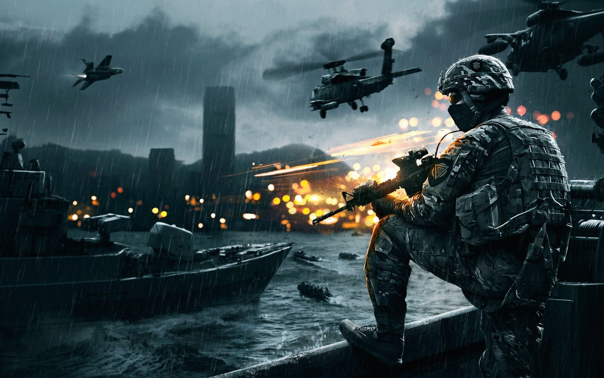

Shooter
Shooter games are a subgenre of action game, which often test the player's speed and reaction time. It includes many subgenres that have the commonality of focusing on the actions of the avatar using some sort of weapon. Usually this weapon is a gun, try to get or some other long-range weapon. A common resource found in many shooter games is ammunition. Most commonly, the purpose of a shooter game is to shoot opponents and proceed through missions without the player character being killed or dying. A shooting game is a genre of video game where the player has limited spatial control of his or her character, and the focus is almost entirely on the defeat of the character's enemies using long-range weaponry.
Perspective
In a first-person shooter, the player usually views the events from a camera angle which simulates the character's point of view, while third-person shooters use a camera which follows the character and can often be controlled by the player. It is also possible for a game to have a fixed camera, especially shooting gallery games and some 2D overhead shooters such as Robotron 2084.
Realism
Tactical shooters are games that attempt to emulate lifelike ballistics and character damage, one example is Rainbow Six. Other shooter games range further away from realism and towards fantasy, like the Sci-Fi action shooting series titled Lost Planet.
